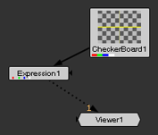
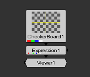
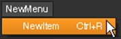
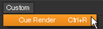
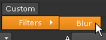

您可以自由地将自定义菜单和菜单选项以及工具栏和工具栏选项添加到 Nuke 接口。然后，艺术家可以使用这些选项来触发存储在插件路径目录中的小工具和插件。
例如，要在默认工具栏中添加一个新菜单，并添加一个选项来触发名为 MyGizmo 的 gizmo，可以执行以下操作:
| 1。 | 在您的主目录中，创建一个名为 。 Nuke (如果它还不存在)。有关此目录的更多信息，请参见 加载 Gizmos 、 NDK 插件以及 Python 和 Tcl 脚本 . |
| 2. | 在 。 Nuke 目录，创建一个名为 Menu.py 如果一个已经不存在。 |
| 3. | 在文本编辑器中，修改文件 Menu.py ,添加行: |
工具栏 = nuke.toolbar (“节点”)
Toolbar.addCommand (“Test/MyGizmo” 、 “nuke.createNode ('MyGizmo')”)
这将向默认节点工具栏添加一个标记为 “测试” 的菜单，其中包含一个标记为 “MyGizmo” 的项，用于创建节点 MyGizmo 的实例。
注意:
节点
类 ()
名字偶尔会在主要版本之间变化，比如 Nuke 7 到 Nuke 8。虽然这些更改不会影响传统脚本，但如果节点类被修改，您可能无法获得预期的结果。的
Toolbars.py
文件，用于创建 Nuke 的节点工具栏，包含所有当前节点类名称，位于
<Install_directory>/plugins/nukescripts/
供参考。
例如，在 Nuke 7 和 Nuke 8 之间，文本节点
类 ()
从文本更改为文本 2。在
Toolbars.py
文件对于这两个版本，文本节点的条目如下所示:
AddCommand (“文本”，“nuke.createNode”，图标 = “Text.png”)
AddCommand (“文本”，“nuke.createNode (“ 文本 2 ”)”，图标 = “文本.Png”)
也可以将项目添加到其他菜单中 Nuke 甚至创建自己的工具栏。以下各节详细介绍了这些可能性。
要添加工具栏:
| 1。 | 创建一个名为 Menu.py 在你的插件路径目录中，如果一个已经不存在。 |
有关插件路径目录的更多信息，请参见 加载 Gizmos 、 NDK 插件以及 Python 和 Tcl 脚本 .
| 2. | 打开 Menu.py 在文本编辑器中添加文件并添加以下格式的条目: |
T = nuke.toolbar (“ToolbarName”)
AddCommand (“NewMenu” 、 “PythonCode” 、 “快捷方式” 、图标 = “IconName”)
• 替换 ToolbarName 带有您想给工具栏命名的名称。此名称显示在下的内容菜单中 窗户 > 自定义 和标题选项卡上的工具栏上方。
• 替换 新菜单 使用要添加到工具栏的菜单的名称。
• 替换 PythonCode 相关的 Python 代码 (通常 Nuke.createNode )，如果需要，请使用 gizmo 、通用 Python 脚本或插件文件的名称，您希望菜单选项调用这些文件。为了方便使用，请将所有此类引用的文件放在插件路径目录中。
如果你喜欢，你也可以替换 PythonCode 由蟒蛇调用。
• 替换 快捷方式 例如，使用键盘快捷键 Alt A , Ctrl/Cmd A ,或 移位 A 。这封信 一个 单独代表小写 一个 . F1 表示功能键 1。您可以将 转变 , Ctrl/Cmd ,和 Alt 必要时钥匙。如果你喜欢，你也可以使用 # A 代表 Alt A, ^ A 代表 Ctrl/Cmd A , 和 一个 代表 移位 A .
• 替换 图标名称 用的名字 。巴布亚新几内亚 (或 。Xpm ) 要用作菜单图标的图像。此图像必须存储在您的 Nuke 插件路径目录。它应该是 24x24 像素的大小。
| 3. | 在上面的条目中，您还可以在括号中添加以下可选参数 "ToolbarName" : |
• 真 。这是默认设置。当为 True 时，nuke.toolbar () 调用具有给定名称的工具栏，或者在该工具栏不存在时创建它。例如, T = nuke.toolbar (“Extras”，True) 要么调用现有的名为 Extras 的工具栏，要么创建一个不存在的工具栏。
• 假 。当为 False 时，如果工具栏不存在，并且 nuke.toolbar () 返回，则不会创建它 没有 。您可以使用它来找出具有给定名称的工具栏是否已经存在。例如, T = nuke.toolbar (“Extras”，假) 要么调用现有的名为 Extras 的工具栏，要么返回 None，如果这样的工具栏不存在。
默认情况下，新工具栏不会出现，但列在 自定义 在内容菜单中。从那里，您可以将其插入任何窗格。一旦你对新的工具栏及其位置感到满意，保存布局 (选择 工作空间 > 保存工作空间 )。此后，无论何时出现工具栏 Nuke 在保存的工作区中启动。
您可以为不同的任务构建几个工具栏，并保存存在一个或另一个工具栏的布局，以便于上下文切换。
以下条目创建了一个名为 额外 。工具栏包括一个名为 创建矢量模糊 创建 VectorBlur 节点。该条目还定义了 v 作为 VectorBlur 节点的键盘快捷键。
T = nuke.toolbar (“Extras”)
AddCommand (“创建向量模糊” 、 “nuke.createNode ('向量模糊')” 、 “v”)
在本示例中，我们将一个名为 Autoplace 的选项添加到示例 1 中创建的工具栏中。该选项将选定的节点依次放置，如下面的图像所示:
|
 |
 |
|
使用 Autoplace 之前
|
使用 Autoplace 后
|
以下条目添加了 Autoplace 选项。它还定义了 Alt 一个 作为此选项的键盘快捷键。
Def _ autoplace ():
N = nuke.selectedNodes ()
对于 n 中的 i:
Nuke.autoplace (i)
t=nuke.toolbar("Extras")
AddCommand (“Auto & place” 、 “_ autoplace ()” 、 “Alt a”)
要定义菜单或工具栏选项:
| 1。 | 如果您还没有这样做，请创建一个名为 Menu.py 在插件路径目录中。有关插件路径目录的更多信息，请参见 加载 Gizmos 、 NDK 插件以及 Python 和 Tcl 脚本 . |
| 2. | Open the menu.py file in a text editor and add an entry in the following format: |
Menubar = nuke.menu (“MenuType”)
M = 菜单栏.addMenu (“& NewMenu”)
AddCommand (“& NewItem” 、 “PythonCode” 、 “快捷方式” 、图标 = “IconName” 、索引 = #)
• 替换 菜单类型 使用要添加项目的菜单或工具栏类型:
Nuke 将项目添加到应用程序主菜单栏。

动画 将项目添加到 “动画” 按钮的菜单中 所有面板，以及曲线编辑器的右击菜单。
属性 将项目添加到属性面板的右击菜单中。
节点图 将项目添加到节点图的右击菜单中。
节点 将项目添加到默认工具栏。
观众 将项目添加到查看器的右击菜单中。
窗格 将项目添加到内容菜单中，在其中显示在 自定义 .
• 替换 新菜单 使用菜单名称。使用现有菜单名称将任何新选项附加到现有菜单中。还可以向默认菜单栏和工具栏添加选项。
• 替换 新项目 使用要添加到菜单中的基础项目。您可以在任何角色之前添加 & 为了将其标记为键盘快捷键触发。
• 替换 PythonCode 相关的 Python 代码 (通常 Nuke.createNode )，如果需要，请使用 gizmo 的名称、通用 Python 脚本或希望菜单选项调用的插件文件。为了方便使用，请将所有此类引用的文件放在插件路径目录中。
有关插件路径目录的更多信息，请参见 加载 Gizmos 、 NDK 插件以及 Python 和 Tcl 脚本 .
如果你喜欢，你也可以替换 PythonCode 由蟒蛇调用。这样做的好处是，您可以在启动时而不是在调用菜单项时了解脚本中的错误。有关使用 lambda 函数的示例，请参见 示例 3 .
• 替换 快捷方式 例如，使用键盘快捷键 Alt A , Ctrl/Cmd A ,或 移位 A 。这封信 一个 单独代表小写 一个 . F1 表示功能键 1。您可以将 转变 , Ctrl/Cmd ,和 Alt 必要时钥匙。如果你喜欢，你也可以使用 # A 代表 Alt A, ^ A 代表 Ctrl/Cmd A , 和 一个 代表 移位 A .
注意: 通过指定键盘快捷方式，可以覆盖现有快捷方式。例如，如果指定快捷方式 Ctrl / Cmd O 对于新的菜单项，它不再用于打开文件的默认目的。但是，快捷方式只会在主菜单栏、工具栏、任何用户创建的工具栏以及添加新菜单项的菜单中被覆盖。这意味着您可以将快捷方式添加到节点图中，例如，无需在查看器中重置相同的快捷方式。但是，如果不在主菜单栏或工具栏中重置相同的快捷方式，就不能将快捷方式添加到节点图中。
• 替换 图标名称 的名字。Png (或。Xpm) 您希望用作菜单图标的图像。此图像必须存储在您的 Nuke 插件路径目录。它应该是 24x24 像素的大小。
• 替换 # 带有表示菜单或工具栏中项目的位置的数字。如果不使用索引关键字，该项目将添加到菜单或工具栏的末尾。
提示:
您也可以将菜单名称放在 addCommand 调用中，如下所示:
Nuke.menu ("MenuType").addCommand ("NewMenu/NewItem"，"PythonCode (" name ")
以下条目创建了一个名为 自定义 > 提示渲染 在菜单栏中。它插入一个名为 “cue _ render” 的 gizmo。“条目还定义了 Ctrl R 作为 gizmo 的键盘快捷键。
Menubar = nuke.menu (“Nuke”)
M = 菜单栏.addMenu (“& Custom”)
AddCommand (“& Cue Render” 、 “nuke.createNode ('Cue _ Render')” 、 “Ctrl R”)

有关如何使用触发 gizmo 的菜单项在默认工具栏中创建新菜单的信息，请参见下面的示例 定义自定义菜单和工具栏 .
以下条目创建了一个名为 自定义 > 过滤器 > 模糊 在菜单栏中。选择 模糊 插入模糊节点。
menubar=nuke.menu("Nuke")
m=menubar.addMenu("&Custom")
AddCommand (“过滤器/模糊”，“nuke.createNode”)

你也可以用 lambda 函数做同样的事情:
menubar=nuke.menu("Nuke")
m=menubar.addMenu("&Custom")
AddCommand (“过滤器/模糊”，lambda: nuke.createNode (“模糊”))
这样，你就不必使用反斜杠。
|
|